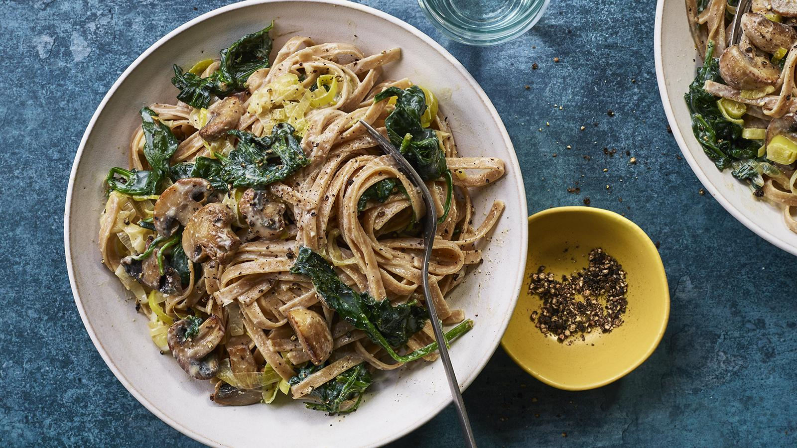

Creamy Mushroom Pasta

Creamy Pasta with mushrooms, leas and spinach.
This creamy mushroom pasta makes a healthy, super-satisfying dinner for two at just over £1 per portion. Dr Rupy uses silken tofu to give the sauce a wonderful creaminess and extra protein.
It's not our powerful lasagne nutrition wise, but still decent meal for your weekdays. Each serving provides 743 kcal, 28g protein, 53g carbohydrate (of which 7g sugars), 14g fat (of which 2g saturates), 12g fibre and 1.2g salt.
Ingridients
- 150g/5½oz wholewheat tagliatelle (or spaghetti)
- olive oil, for frying
- 1 large leek, thinly sliced
- 200g/7oz baby leaf spinach (or frozen spinach, see Recipe Tip)
- 200g/7oz mushrooms, thickly sliced
- 2 garlic cloves, crushed
- 150g/5½oz silken tofu
- 1 tbsp light soy sauce
- salt and freshly ground black pepper
Steps
- Cook the pasta in a large saucepan of boiling salted water for 10 minutes, or according to the packet instructions. Drain the pasta, reserving some of the cooking water.
- Meanwhile, heat a splash of olive oil in a large frying pan over a medium heat and fry the leeks gently for 5 minutes, until soft. Spoon into a bowl and set aside.
- Add a little more oil to the pan, increase the heat, then add the spinach and cook for a minute or 2, until wilted. Tip the spinach out onto a plate lined with kitchen paper, cover with more kitchen paper and squeeze out the excess moisture.
- Heat some more oil in the frying pan, add the mushrooms and fry over a high heat until softened and caramelised. Add the garlic, fry for a couple of minutes, then return the leeks and spinach to the pan.
- Put the silken tofu and soy sauce in a tall jug and add 3 tablespoons of the reserved pasta water. Use a stick blender to blend to a smooth sauce, then pour into the pan with the mushroom mixture.
- Add the cooked pasta to the pan and toss everything together. Season to taste with salt and pepper, then serve.